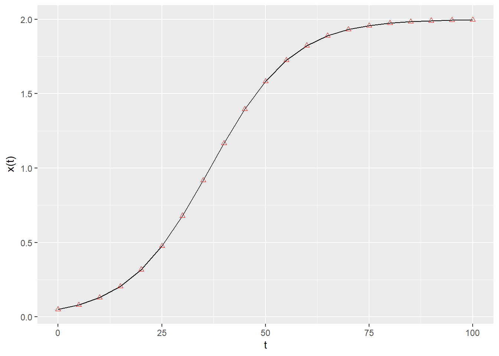

where \(x(t)\) is a (column) vector of length \(n\) containing the densities of all populations \(1, \ldots, n\) at time \(t\), \(r\) is a vector of “intrinsic growth rates” (or death rates, when negative), measuring the growth (decline) of population \(i\) when grown alone at low density, and \(A\) is a \(n \times n\) matrix of interaction coefficients. We use \(D(x)\) to denote the diagonal matrix with \(x\) on the diagonal.
The simplest case to study is that of a single population, in which case the equation becomes that of the logistic growth:
\[
\dfrac{dx(t)}{dt} = x(t)(r + a x(t))
\]
This is a separable ODE, with solution:
\[
x(t) = \frac{r}{e^{-r \left(k+t\right)}-a}
\]
where \(k\) is a constant. Setting \(x(0) = x_0\) (i.e., providing an initial condition), solving for the constant and substituting, we obtain:
\[
x(t) = \frac{r {x_0} e^{r t}}{r-a {x_0} \left(e^{r t}-1\right)}
\] As such, provided with the parameters \(r\) and \(a\), as well as an initial condition, we can determine the population size for any time \(t\). For example, in R:
pacman::p_load("deSolve") # integrate ODEspacman::p_load("tidyverse") # plotting and wrangling# define the differential equationlogistic_growth <-function(t, x, parameters){with(as.list(c(x, parameters)), { dxdt <- x * (r + a * x)list(dxdt) })}# define parameters, integration time, initial conditionstimes <-seq(0, 100, by =5)x0 <-0.05r <-0.1a <--0.05parameters <-list(r = r, a = a)# solve numericallyout <-ode(y = x0, times = times, func = logistic_growth, parms = parameters, method ="ode45")# now compute analyticallysolution <- r * x0 *exp(r * times) / (r - a * x0 * (exp(r * times) -1))# use ggplot to plotres <-tibble(time = out[,1], x_t = out[,2], x_sol = solution)ggplot(data = res) +aes(x = time, y = x_t) +geom_line() +geom_point(aes(x = time, y = x_sol), colour ="red", shape =2) +ylab(expression("x(t)")) +xlab(expression("t"))

If \(a < 0\) and \(r > 0\), the population started at any positive value eventually reaches an equilibrium, which we can find by setting \(dx(t)/dt = 0\) and considering \(x \neq 0\):